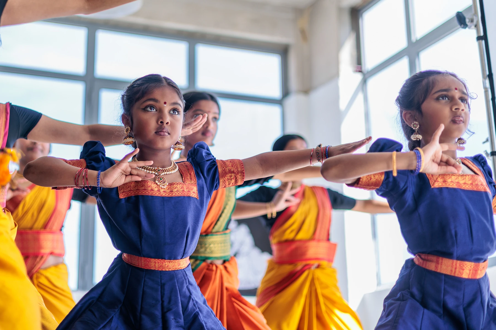
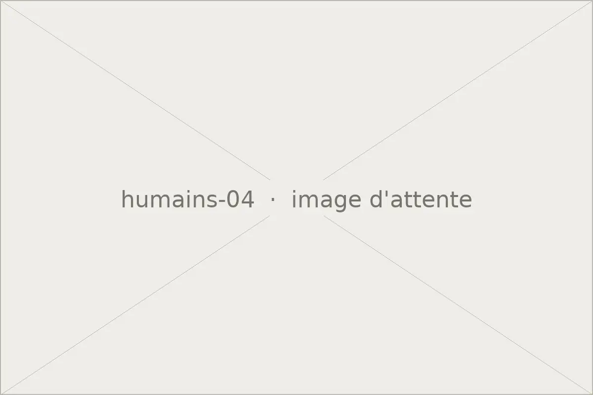

Bienvenue
Raju Sinniah
Photographe depuis 2010. Je saisis ce qui arrive, je ne le mets pas en scène.Le travail
Trois séries


La démarche
Me faire oublier
Le photojournalisme m'a appris à attendre plutôt qu'à diriger. Les images qui restent sont rarement celles qu'on a posées.